[!TIP] Ongoing and occasional updates and improvements.
JVM monitoring: cryostat on openshift 4.14
We want to monitor java app, to find out misbehaving,
performance issue, etc. We can use cryostat to do
this.
In this lab, we will use a buggy java app to demonstrate how
to use cryostat to monitor it. This buggy java app
will provide a web service, during each http request, it will
create 1000 new thread to call backend service, which will cause
the app to hang under traffic load.
offical docs:
- https://access.redhat.com/documentation/en-us/red_hat_build_of_cryostat/2
The arch of this lab:
install cert-manager
Install the cert-manager just from the operator hub.
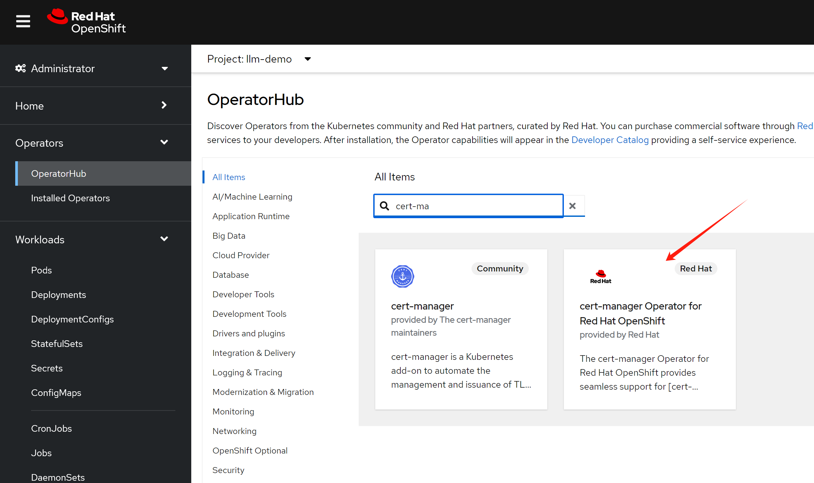
install cryostat
Selec the cryostat opeartor from operator hub
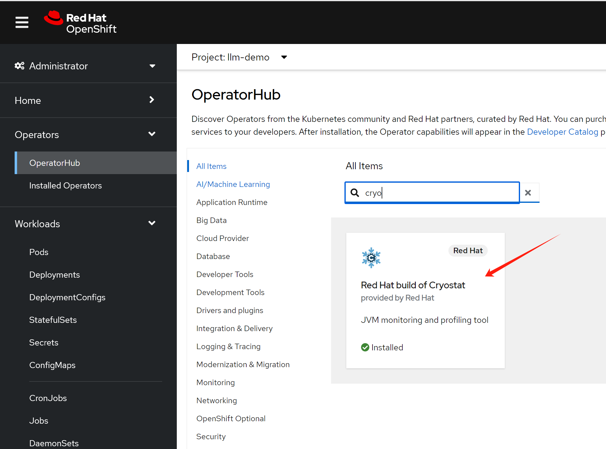
Then, create a cryostat instance at app project/namespace
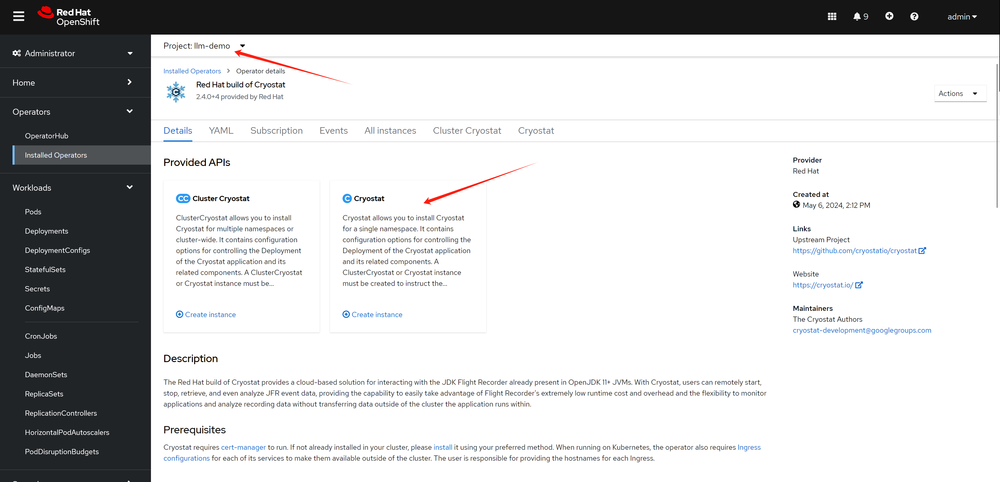
Keep cert-manager integration for our test.
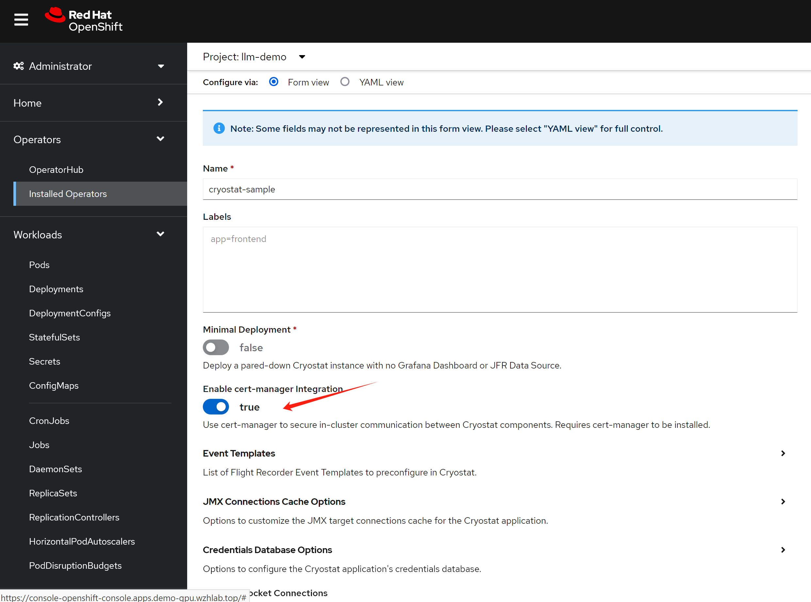
Craete a report instance, so we can see a general report of the app.
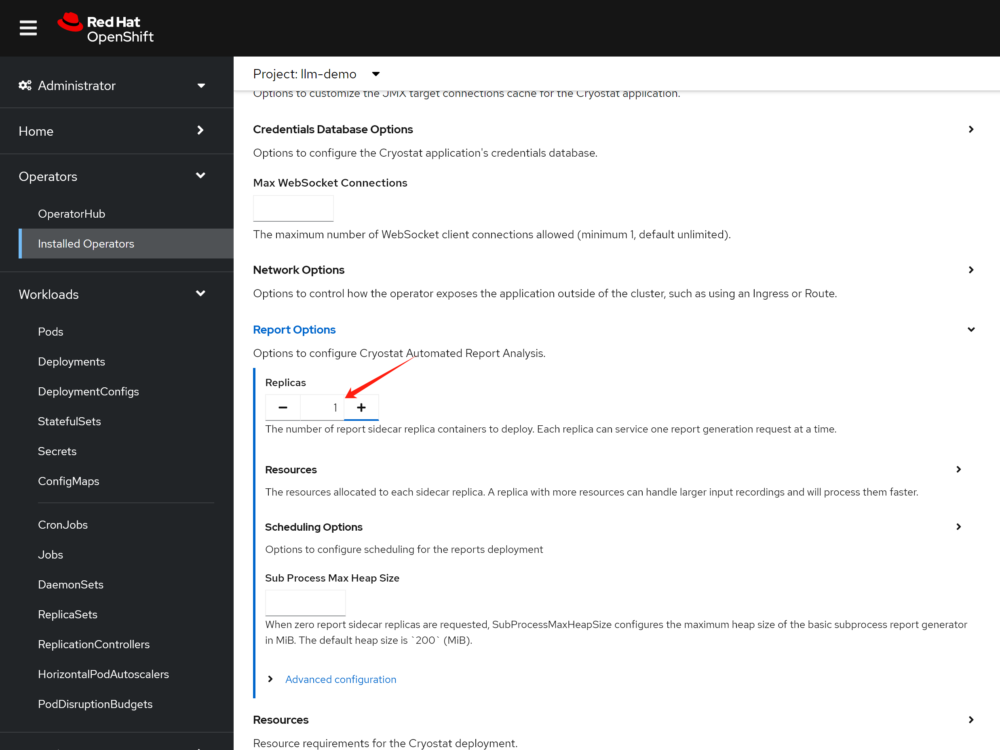
Give enough memory to the cryostat, otherwize the cryostat console will crash.
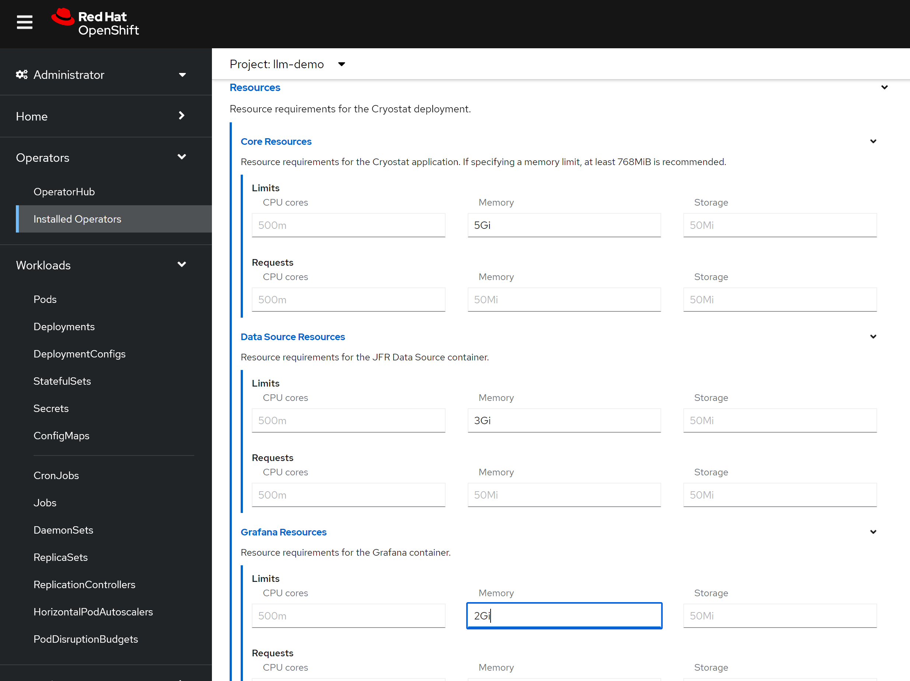
Attach the ssl cert to the cryostat deployment, this is a requirement, because in redhat build of cryostat, the connect to app/jmx/agent, must be ssl enabled, otherwise the console will deny show result.
[!NOTE] how to create the ssl cert is located in later section.
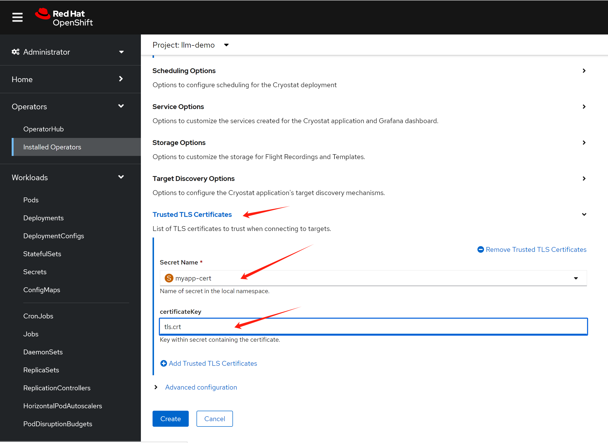
try with the buggy java app in JMX way
The JMX is a feature of java/jvm, it can provide monitoring and management data, we can use it to monitor the java app. So the arch of this test looks like this, you can see, the monitor data is from jmx, and the cryostat will get the data from jmx.
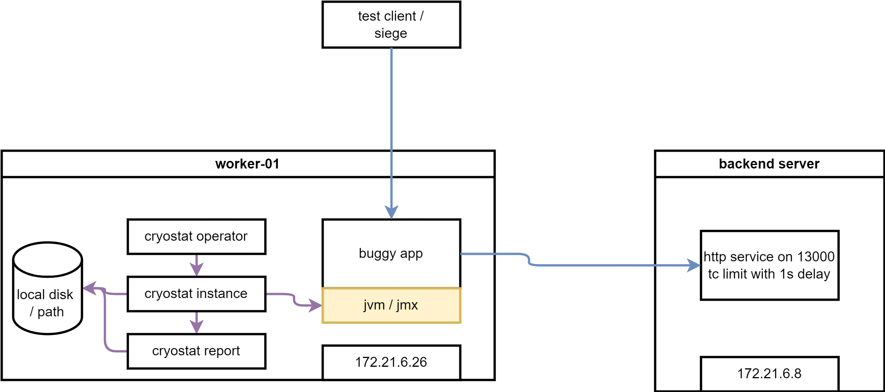
the buggy java code
We create a buggy java app, it will create 1000 thread on each rest api call, and the 1000 threads, each will call for backend service to get the result.
Here is the buggy code, you can get the source code at here.
ExecutorService executorService = Executors.newFixedThreadPool(maxThreads);
try {
for (int i = 0; i < maxThreads; i++) {
executorService.submit(() -> {
try {
LOGGER.info(Thread.currentThread().getName());
sendHttpRequest();
} catch (Exception e) {
// handle exception
e.printStackTrace();
}
});
}
executorService.shutdown();
if (!executorService.awaitTermination(timeoutMins, TimeUnit.MINUTES)) {
executorService.shutdownNow();
}
} catch (InterruptedException e) {
e.printStackTrace();
executorService.shutdownNow();
}
String response = sendHttpRequest();
return ResponseEntity.ok(response);deploy the java app with JMX
There are several way to get monitoring data from app, one is JMX, another is agent, we will use JMX in this section, because it will only use jvm capabilities, and no need to change the app code.
# we need keytool from jdk
dnf install -y java-21-openjdk-devel
cd ${BASE_DIR}/data/install/
# Generate a Keystore
keytool -genkeypair -alias wzhlab -keyalg RSA -keystore keystore.jks -keysize 2048 -storepass redhat2024 -dname "CN=wzhlab-demo, OU=wzhlab-demo, O=wzhlab-demo, L=Beijing, ST=Beijing, C=CN" -validity $((365*100))
# Generating 2,048 bit RSA key pair and self-signed certificate (SHA384withRSA) with a validity of 36,500 days
# for: CN=wzhlab-demo, OU=wzhlab-demo, O=wzhlab-demo, L=Beijing, ST=Beijing, C=CN
# Generate a Certificate Signing Request (CSR)
# keytool -certreq -alias wzhlab -file wzhlab.csr -keystore keystore.jks -storepass redhat2024
# Self-sign the CSR (if you don't have a Certificate Authority)
# keytool -gencert -alias wzhlab -infile wzhlab.csr -outfile wzhlab.crt -keystore keystore.jks -storepass redhat2024 -rfc
# create the certificate
keytool -exportcert -alias wzhlab -keystore keystore.jks -rfc -file wzhlab.crt -storepass redhat2024
oc create secret generic myapp-cert -n llm-demo \
--from-file=tls.crt=${BASE_DIR}/data/install/wzhlab.crt \
--from-file=keystore.jks=${BASE_DIR}/data/install/keystore.jks \
--from-literal=storepass="redhat2024"
# oc delete secret myapp-cert -n llm-demo
# we prepare the jmx user/password
cat << EOF > ${BASE_DIR}/data/install/cryostat-user.yaml
monitor readonly
EOF
cat << EOF > ${BASE_DIR}/data/install/cryostat-pwd.yaml
monitor redhat
EOF
oc create configmap jmx-config -n llm-demo \
--from-file=jmxremote.access=${BASE_DIR}/data/install/cryostat-user.yaml
oc create secret generic jmx-secret -n llm-demo \
--from-file=jmxremote.password=${BASE_DIR}/data/install/cryostat-pwd.yaml
# go back to helper
# create a dummy pod
# we will disable JMX auth now for simplified,
# will focus on agent way later.
cat << EOF > ${BASE_DIR}/data/install/demo1.yaml
---
apiVersion: v1
kind: Service
metadata:
name: wzh-demo-service
spec:
ports:
- name: service-port
port: 80
protocol: TCP
targetPort: 8080
- name: "jfr-jmx"
port: 9091
targetPort: 9091
- name: "cryostat-agent"
port: 9977
targetPort: 9977
selector:
app: wzh-demo-pod
---
apiVersion: route.openshift.io/v1
kind: Route
metadata:
name: wzh-demo
annotations:
haproxy.router.openshift.io/timeout: 2m
spec:
to:
kind: Service
name: wzh-demo-service
port:
targetPort: service-port
---
apiVersion: apps/v1
kind: Deployment
metadata:
name: wzh-demo-deployment
labels:
app: wzh-demo-pod
spec:
replicas: 1
selector:
matchLabels:
app: wzh-demo-pod
template:
metadata:
labels:
app: wzh-demo-pod
spec:
# nodeSelector:
# kubernetes.io/hostname: 'worker-01-demo'
containers:
- name: demo1
image: quay.io/wangzheng422/qimgs:simple-java-http-server-threads-2024.05.06.v01
env:
- name: WZH_URL
value: "http://172.21.6.8:13000/singbox.config.json"
- name: keyStorePassword
valueFrom:
secretKeyRef:
name: myapp-cert
key: storepass
- name: JAVA_OPTS
value: "-Dcom.sun.management.jmxremote.port=9091 -Dcom.sun.management.jmxremote.authenticate=false -Dcom.sun.management.jmxremote.ssl=true -Dcom.sun.management.jmxremote.registry.ssl=true -Djavax.net.ssl.keyStore=/jmx-keystore/keystore.jks -Djavax.net.ssl.keyStorePassword=\$(keyStorePassword) "
# - name: JAVA_OPTS
# value: "-Dcom.sun.management.jmxremote.port=9091 -Dcom.sun.management.jmxremote.authenticate=true -Dcom.sun.management.jmxremote.password.file=/jmx-secret/jmxremote.password -Dcom.sun.management.jmxremote.access.file=/jmx-config/jmxremote.access"
# command: [ "/bin/bash", "-c", "--" ]
# args: [ "tail -f /dev/null" ]
# imagePullPolicy: Always
volumeMounts:
- name: jmx-config-volume
mountPath: /jmx-config/
- name: jmx-secret-volume
mountPath: /jmx-secret/
- name: keystore-volume
mountPath: /jmx-keystore/
volumes:
- name: keystore-volume
secret:
secretName: myapp-cert
- name: jmx-secret-volume
secret:
secretName: jmx-secret
- name: jmx-config-volume
configMap:
name: jmx-config
EOF
oc apply -n llm-demo -f ${BASE_DIR}/data/install/demo1.yaml
# oc delete -n llm-demo -f ${BASE_DIR}/data/install/demo1.yamlsee cryostat result
We do not have password setting, so we can see the app from the cryostat directly.
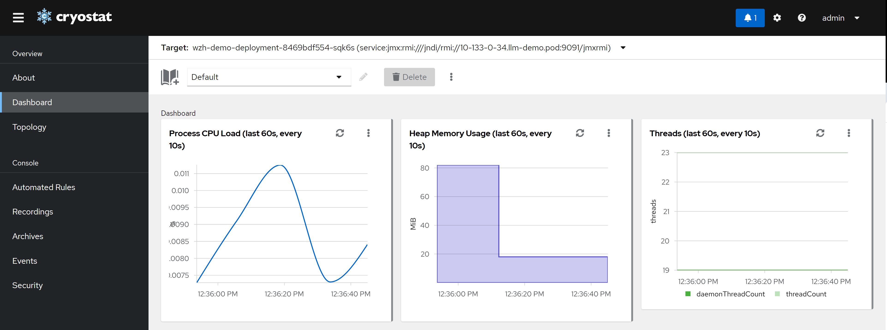
We can see apps in the project.
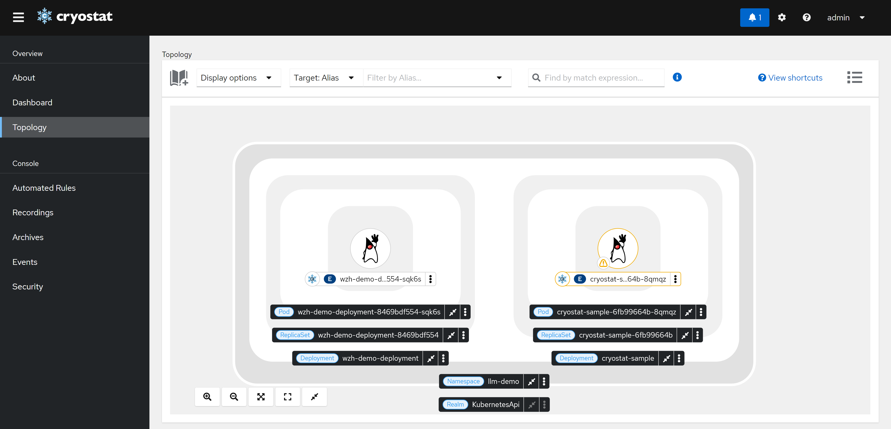
We can create report directly.
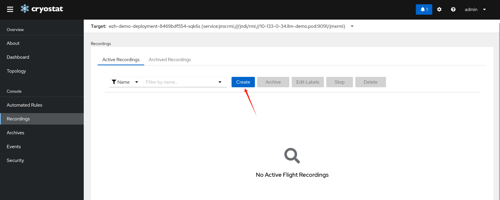
Set duration and template. Different template will have different KPI.
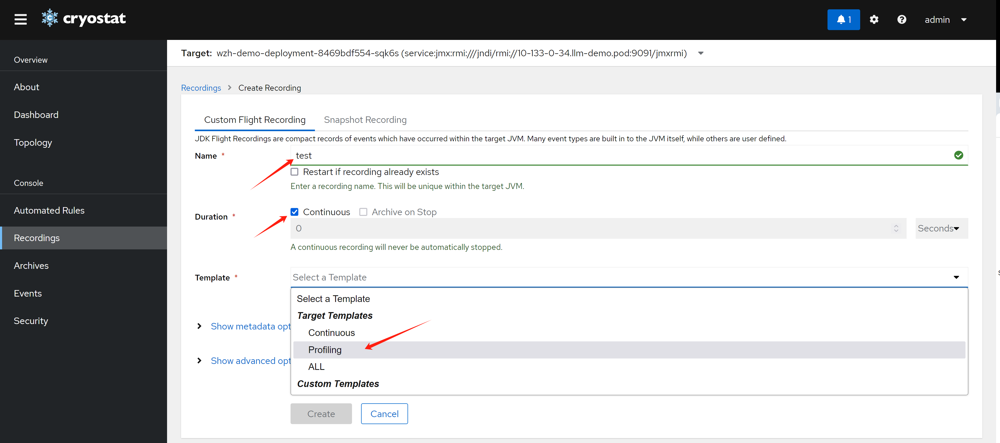
After the recording created, we can see the result in grafana, or download the jfr file to analyze offline.
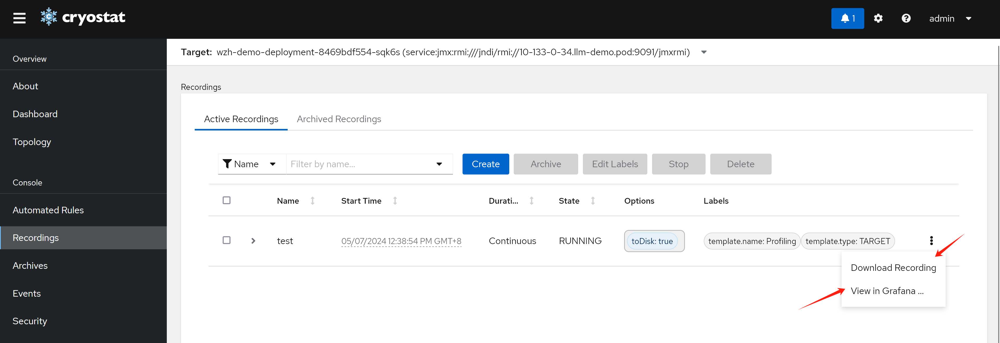
get the username/password for graphana
oc get secret cryostat-sample-grafana-basic -n llm-demo -o jsonpath='{.data.GF_SECURITY_ADMIN_USER}' | base64 -d && echo
# admin
oc get secret cryostat-sample-grafana-basic -n llm-demo -o jsonpath='{.data.GF_SECURITY_ADMIN_PASSWORD}' | base64 -d && echo
# cQLRhe-X5jHVF6p0QuuANow, we can open the grafana console, and login.
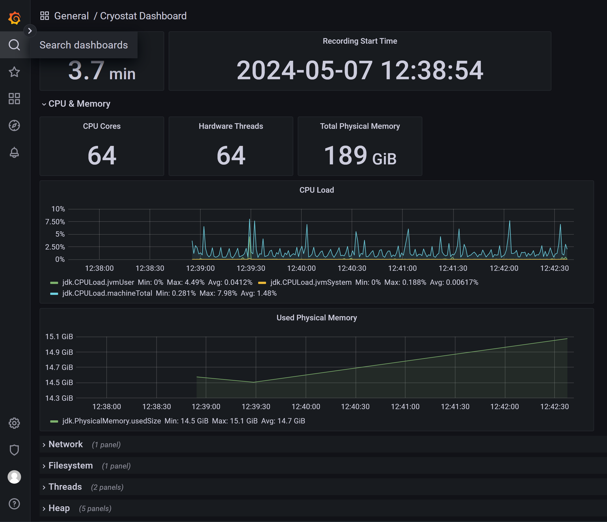
We can switch to another dashboard to see the result.
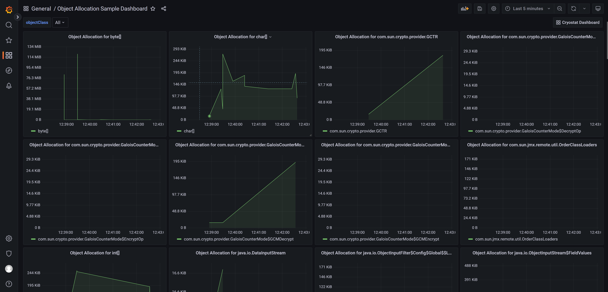
you can also define automation rule to create reporting for pods belongs to deployment.
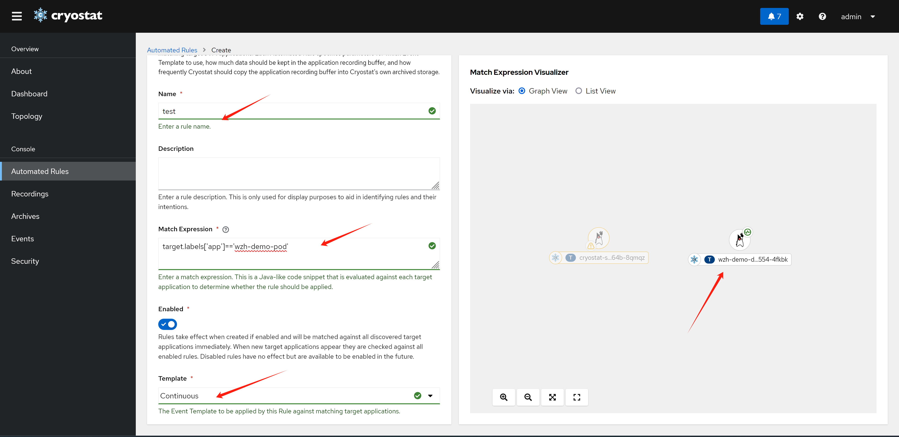
We can see the report is created automatically. Now lets see the analysis.
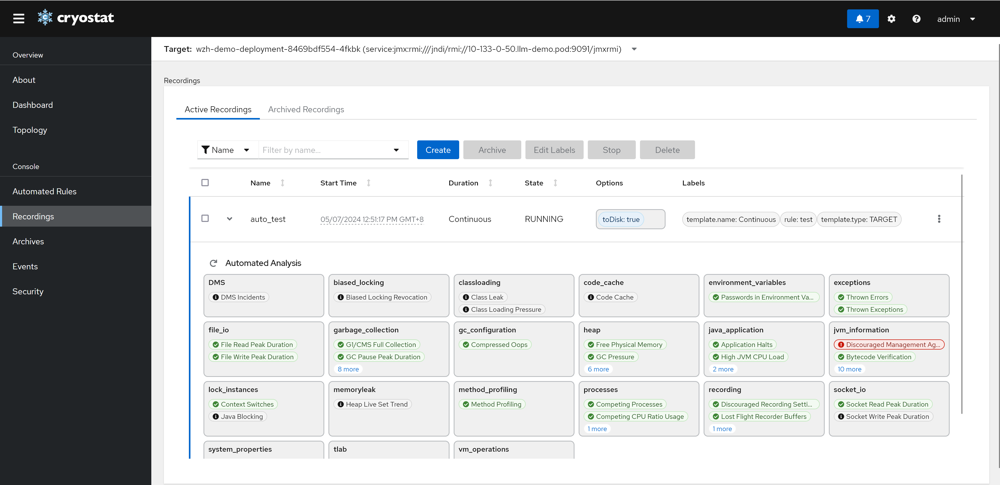
To limit the storage usage, you can limit the recording time, and number of archive, when you create automation rule.
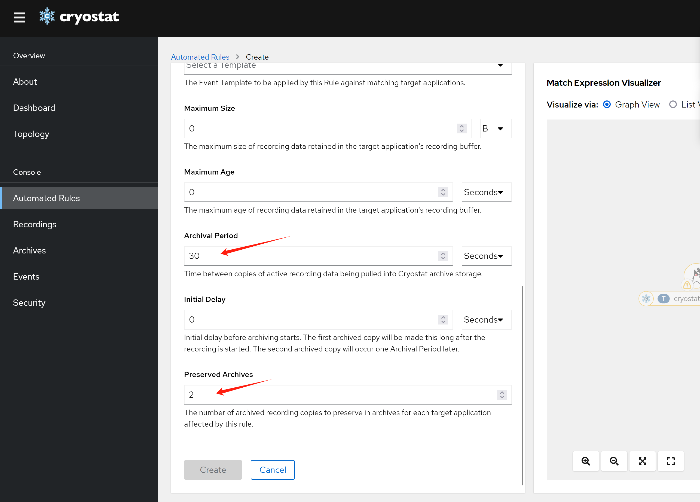
Then you can get 2 archive, the file size is limited.
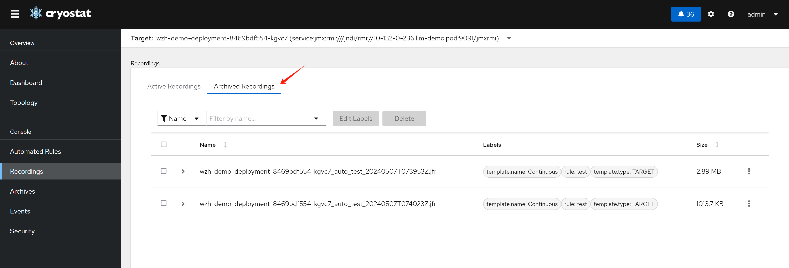
testing with app
# test on helper
siege -q -c 1 -d 10 http://wzh-demo-llm-demo.apps.demo-gpu.wzhlab.top/sendRequestand look at cryostat report, you can see it find out context switching, java blocking problems
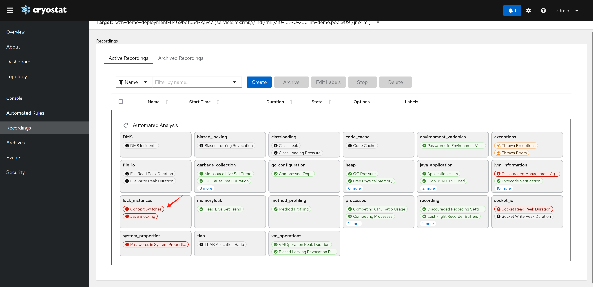
and from grafana, we can see threads are increasing, so our buggy app is creating and closing threads all the times.
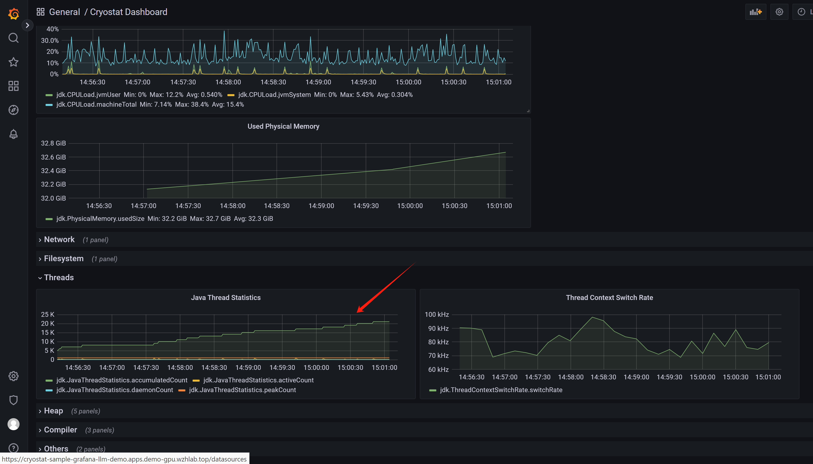
analyze with jfr
download jre/jdk at:
- https://adoptium.net/download/
download jmc at:
- https://adoptium.net/jmc/
download the jfr file:
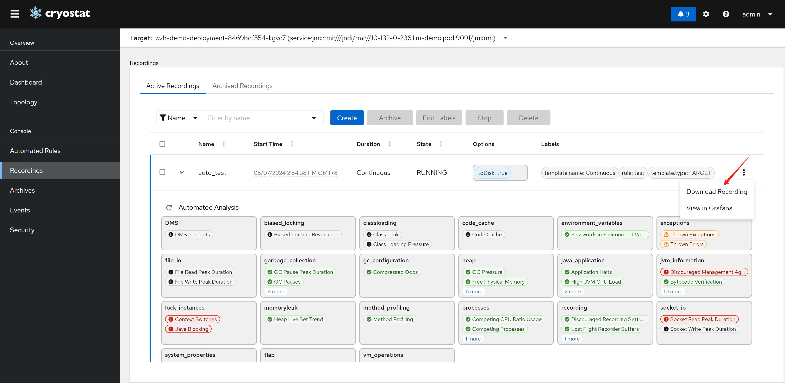
open jmc, and open jfr file, you can see the overall result, just the same with cryostat analyse reporting.
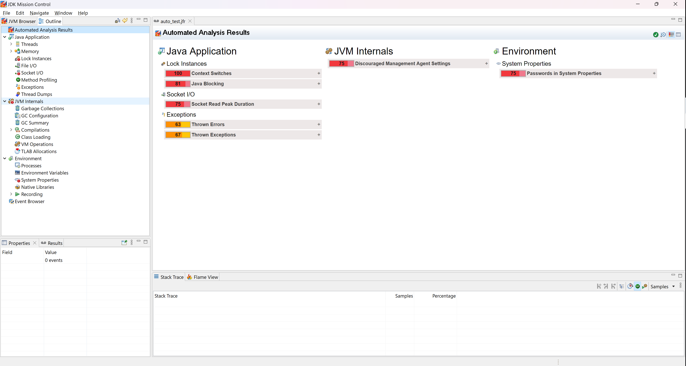
And you can go deeper to see the java app’s overall result.
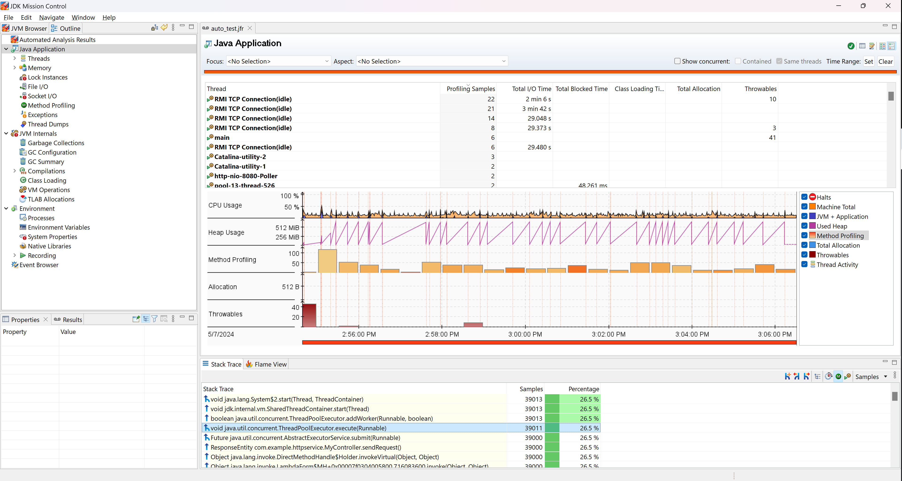
From socket view, you can see the connection report.
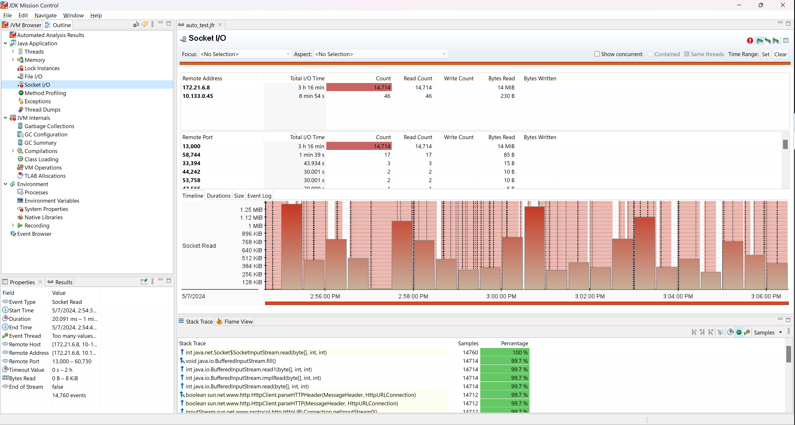
From the thread report, you can see app’s thread behaviour is buggy. The thread view is slow, so you should give small jfr file if you want to open thread view.
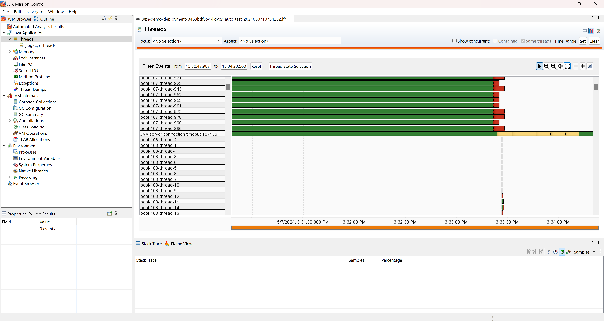
the priciple
by go to pod terminal, we can see, it just dump jfr file to /tmp, and then the cryostat will pick it up.
# get the first pod name from deployment
POD_NAME=$(oc get pod -n llm-demo -l app=wzh-demo-pod -o jsonpath='{.items[0].metadata.name}')
# login to pod, and list /tmp/ with folder like 2024_05_08_12_39_54_7
oc exec -n llm-demo $POD_NAME -it -- /bin/bash -c "ls -l /tmp/"
# total 0
# drwxr-xr-x. 2 1000720000 root 80 May 8 13:10 2024_05_08_12_39_54_7
# drwxr-xr-x. 2 1000720000 root 23 May 8 12:39 hsperfdata_1000720000
# drwxr-xr-x. 1 root root 24 May 2 01:12 hsperfdata_root
# drwx------. 3 1000720000 root 26 May 8 12:39 tomcat.8080.3417839246973169794
# drwx------. 2 1000720000 root 10 May 8 12:39 tomcat-docbase.8080.14004372978732183802
oc exec -n llm-demo $POD_NAME -it -- /bin/bash -c "ls -l /tmp/2024_05_08_12_39_54_7"
# total 2760
# -rw-r--r--. 1 1000720000 root 1841833 May 8 13:10 2024_05_08_12_47_24.jfr
# -rw-r--r--. 1 1000720000 root 724150 May 8 13:18 2024_05_08_13_10_09.jfrtry with the buggy java app in agent way
The agent way is more flexible, because it remove the priviledge of jmx. In agent way, the jvm will inject with agent.jar byte-code, and then the agent will collect the data, and send to cryostat.
Download cryostat agent from upstream, find the correct versino based on the cryostat version. For this lab, it is cryostat 2.4.0, so we download the agent 0.3.0.
- https://github.com/cryostatio/cryostat-agent
- https://cryostat.io/get-started/#using-the-cryostat-agent
We will follow opentelementry way, to build a new image with agent, and then deploy it with copy to java app container.
agent.jar image
# on vultr
dnf install -y java-1.8.0-openjdk-devel java-21-openjdk-devel
dnf install -y /usr/bin/podman-compose /usr/bin/mvn
mkdir -p /data
cd /data
# download the jar from github
# https://github.com/cryostatio/cryostat-agent/packages/1601815?version=0.3.0
# and copy to server
cat << EOF > agent.dockerfile
FROM docker.io/rockylinux:9-minimal AS build
ADD cryostat-agent-0.3.0-shaded.jar /cryostat-agent-0.3.0-shaded.jar
EOF
podman build -t quay.io/wangzheng422/qimgs:cryostat-agent-v0.3.0 -f agent.dockerfile .
podman push quay.io/wangzheng422/qimgs:cryostat-agent-v0.3.0start buggy java app
Then, we will copy the agent to java app container, and start the agent.
# Create a new service account
oc project llm-demo
# we need a sa for cryostat agent to access cryostat instance
oc create sa cryostat-app
# Assign the 'edit' role to the service account
# This allows the service account to create, read, and update resources in the current namespace
oc policy add-role-to-user edit system:serviceaccount:$(oc project -q):cryostat-app
# Get the name of the token secret for the service account
TOKEN_SECRET_NAME=$(oc get sa cryostat-app -o jsonpath='{.secrets[0].name}')
TOKEN_APP_SECRET_NAME=$(oc get secret $TOKEN_SECRET_NAME -o jsonpath='{.metadata.ownerReferences[0].name}')
echo $TOKEN_APP_SECRET_NAME
# cryostat-app-token-7flvq
# Get the token value
# TOKEN_VALUE=$(oc get secret $TOKEN_APP_SECRET_NAME -o jsonpath='{.data.token}' | base64 --decode)
TOKEN_VALUE_ENC=$(oc get secret $TOKEN_APP_SECRET_NAME -o jsonpath='{.data.token}')
echo $TOKEN_VALUE_ENC
# here is the cert created by cryostat instance, through cert-manager operator
oc get cert
# NAME READY SECRET AGE
# cryostat-sample True cryostat-sample-tls 55m
# cryostat-sample-ca True cryostat-sample-ca 55m
# cryostat-sample-grafana True cryostat-sample-grafana-tls 55m
# cryostat-sample-reports True cryostat-sample-reports-tls 55m
# go back to helper
# create a dummy pod
# here we need the cryostat instance name
# the cryostat instance will create certification by using cert-manager
# and the certification is stored in secret, later we will get the secret name by add 'tls' to the end
VAR_CRYOSTAT_NAME="cryostat-sample"
cat << EOF > ${BASE_DIR}/data/install/demo1.yaml
---
apiVersion: v1
kind: Service
metadata:
name: wzh-demo-service
spec:
ports:
- name: service-port
port: 80
protocol: TCP
targetPort: 8080
- name: "jfr-jmx"
port: 9091
targetPort: 9091
- name: "cryostat-agent"
port: 9977
targetPort: 9977
selector:
app: wzh-demo-pod
---
apiVersion: route.openshift.io/v1
kind: Route
metadata:
name: wzh-demo
annotations:
haproxy.router.openshift.io/timeout: 2m
spec:
to:
kind: Service
name: wzh-demo-service
port:
targetPort: service-port
---
apiVersion: apps/v1
kind: Deployment
metadata:
name: wzh-demo-deployment
labels:
app: wzh-demo-pod
spec:
replicas: 1
selector:
matchLabels:
app: wzh-demo-pod
template:
metadata:
labels:
app: wzh-demo-pod
spec:
# nodeSelector:
# kubernetes.io/hostname: 'worker-01-demo'
initContainers:
- name: agent-jar
image: quay.io/wangzheng422/qimgs:cryostat-agent-v0.3.0
command: ["/bin/sh", "-c", "cp /cryostat-agent-0.3.0-shaded.jar /agent-dir/cryostat-agent-0.3.0-shaded.jar"]
volumeMounts:
- name: agent-dir
mountPath: /agent-dir
containers:
- name: demo1
image: quay.io/wangzheng422/qimgs:simple-java-http-server-threads-2024.05.06.v01
env:
- name: WZH_URL
value: "http://172.21.6.8:13000/singbox.config.json"
- name: keyStorePassword
valueFrom:
secretKeyRef:
name: $VAR_CRYOSTAT_NAME-keystore
key: KEYSTORE_PASS
- name: CRYOSTAT_AGENT_APP_NAME
value: "buggy-java-app"
- name: NAMESPACE
valueFrom:
fieldRef:
fieldPath: metadata.namespace
- name: CRYOSTAT_AGENT_BASEURI
value: "https://$VAR_CRYOSTAT_NAME.\$(NAMESPACE).svc.cluster.local:8181"
- name: CRYOSTAT_AGENT_API_WRITES_ENABLED
value: "true"
- name: POD_IP
valueFrom:
fieldRef:
fieldPath: status.podIP
- name: CRYOSTAT_AGENT_CALLBACK
value: "http://\$(POD_IP):9977"
- name: CRYOSTAT_AGENT_AUTHORIZATION
value: "Bearer ${TOKEN_VALUE_ENC}"
- name: JAVA_OPTS
value: "-javaagent:/agent-dir/cryostat-agent-0.3.0-shaded.jar -Djavax.net.ssl.trustStore=/cryostat-keystore/truststore.p12 -Djavax.net.ssl.trustStorePassword=\$(keyStorePassword) "
volumeMounts:
- name: agent-dir
mountPath: /agent-dir
- name: cryostat-keystore
mountPath: /cryostat-keystore
volumes:
- name: cryostat-keystore
secret:
secretName: $VAR_CRYOSTAT_NAME-tls
- name: agent-dir
emptyDir: {}
EOF
oc apply -n llm-demo -f ${BASE_DIR}/data/install/demo1.yaml
# oc delete -n llm-demo -f ${BASE_DIR}/data/install/demo1.yaml
# test on helper
siege -q -c 1 -d 10 http://wzh-demo-llm-demo.apps.demo-gpu.wzhlab.top/sendRequestFrom the cryostat grafana result, we can see the thread increased a lot, and this is the buggy java app behaviour.
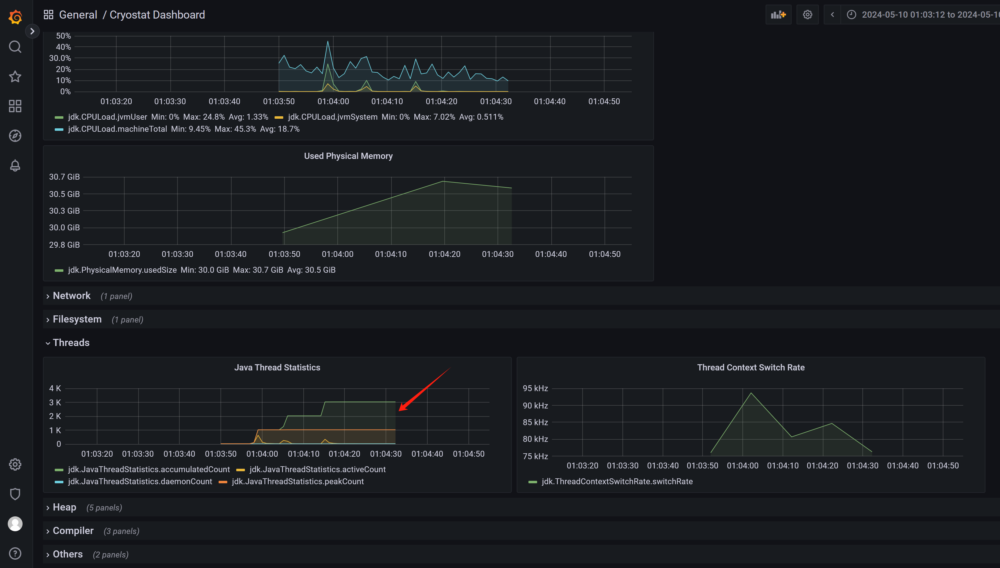
see on cryostat webconsole
First, we need to create a cryostat instance, this is the same with previous steps, but do not need TLS certification.
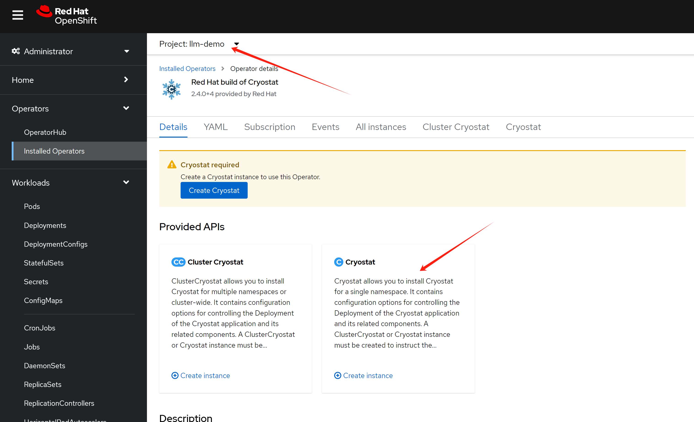
This time, we do not need this, do not need to add tls cert.
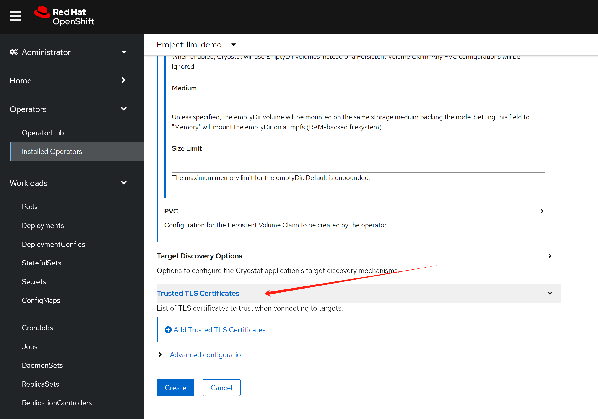
After create buggy java app, we can see the app from targets.
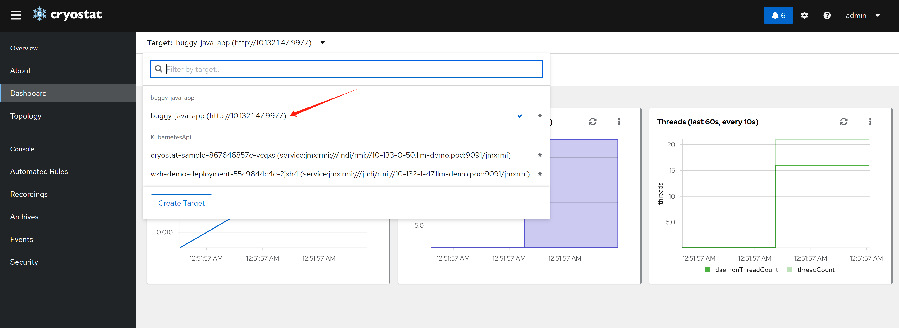
After define a automate rule,
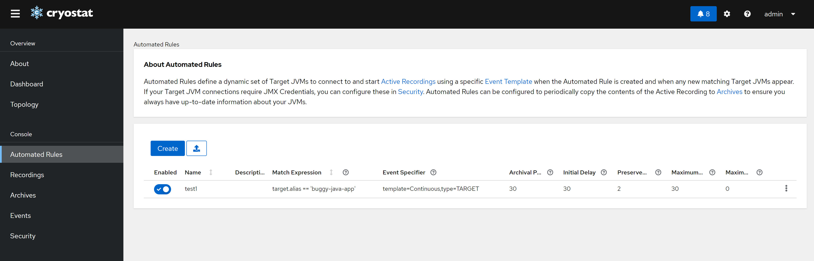
We can see recordings.
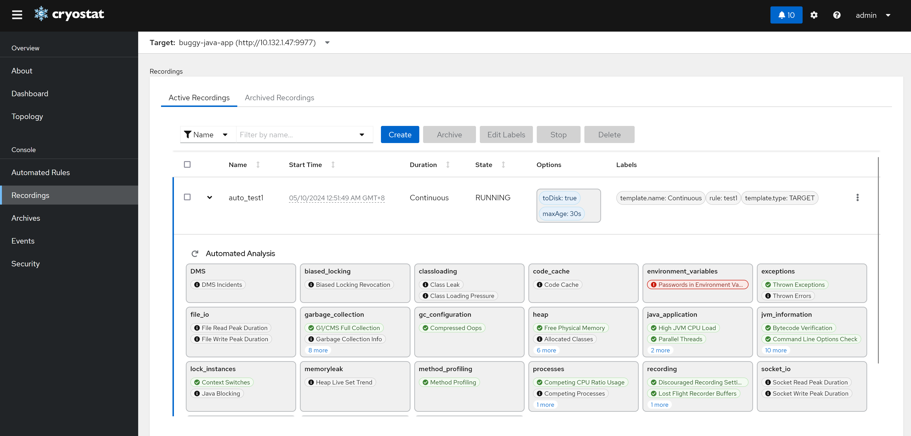
And archives.
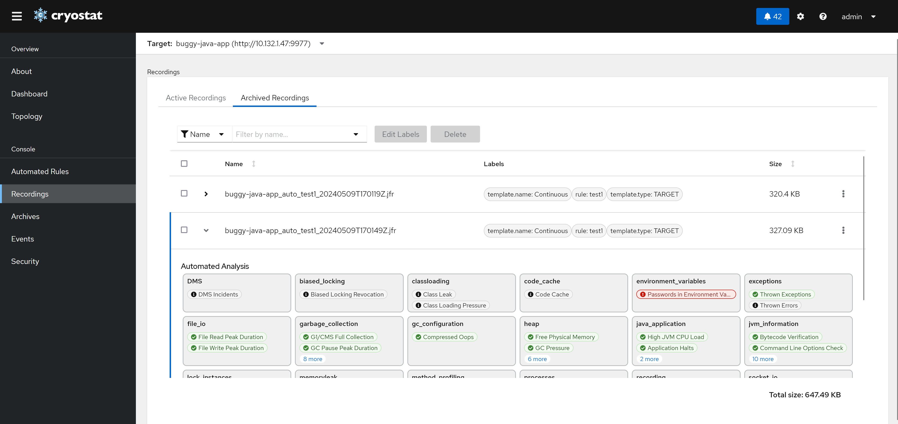
Other usage will be the same.
Here is the cryostat instance config yaml file. For your reference.
apiVersion: operator.cryostat.io/v1beta1
kind: Cryostat
metadata:
name: cryostat-sample
namespace: llm-demo
spec:
enableCertManager: true
minimal: false
reportOptions:
replicas: 1
resources: {}
resources:
coreResources:
limits:
memory: 5Gi
dataSourceResources:
limits:
memory: 3Gi
grafanaResources:
limits:
memory: 2Gi
schedulingOptions:
affinity:
nodeAffinity:
requiredDuringSchedulingIgnoredDuringExecution:
nodeSelectorTerms:
- matchExpressions:
- key: kubernetes.io/hostname
operator: In
values:
- worker-01-demo
storageOptions:
pvc:
spec:
resources: {}build the java app with agent.jar
The agent.jar we used in above example is download from upstream, and we build a new image with it. But in real world, we should build the java app with agent.jar, so we can deploy the app with agent.jar together.
The upstream docs:
- https://cryostat.io/get-started/#using-the-cryostat-agent
- https://access.redhat.com/documentation/en-us/red_hat_build_of_cryostat/2/pdf/getting_started_with_cryostat/red_hat_build_of_cryostat-2-getting_started_with_cryostat-en-us.pdf
The example java code repository is here:
- https://github.com/wangzheng422/simple-java-http-server/tree/thread.agent.jar
Most of the change compare to the previous version is in the
Dockerfile and pom.xml, we add the
agent.jar to the image, and then start the java app with
agent.jar.
run the java app
From deployment perspective, the difference is we do not need init-container to copy the agent.jar to the java app container, because the agent.jar is already in the java app image. And we do not need to add -javaagent parameter to JAVA_OPTS, because it is already in the image entrypoint.
# Create a new service account
oc project llm-demo
# we need a sa for cryostat agent to access cryostat instance
oc create sa cryostat-app
# Assign the 'edit' role to the service account
# This allows the service account to create, read, and update resources in the current namespace
oc policy add-role-to-user edit system:serviceaccount:$(oc project -q):cryostat-app
# Get the name of the token secret for the service account
TOKEN_SECRET_NAME=$(oc get sa cryostat-app -o jsonpath='{.secrets[0].name}')
TOKEN_APP_SECRET_NAME=$(oc get secret $TOKEN_SECRET_NAME -o jsonpath='{.metadata.ownerReferences[0].name}')
echo $TOKEN_APP_SECRET_NAME
# cryostat-app-token-7flvq
# Get the token value
# TOKEN_VALUE=$(oc get secret $TOKEN_APP_SECRET_NAME -o jsonpath='{.data.token}' | base64 --decode)
TOKEN_VALUE_ENC=$(oc get secret $TOKEN_APP_SECRET_NAME -o jsonpath='{.data.token}')
echo $TOKEN_VALUE_ENC
# here is the cert created by cryostat instance, through cert-manager operator
oc get cert
# NAME READY SECRET AGE
# cryostat-sample True cryostat-sample-tls 55m
# cryostat-sample-ca True cryostat-sample-ca 55m
# cryostat-sample-grafana True cryostat-sample-grafana-tls 55m
# cryostat-sample-reports True cryostat-sample-reports-tls 55m
# go back to helper
# create a dummy pod
# here we need the cryostat instance name
# the cryostat instance will create certification by using cert-manager
# and the certification is stored in secret, later we will get the secret name by add 'tls' to the end
VAR_CRYOSTAT_NAME="cryostat-sample"
cat << EOF > ${BASE_DIR}/data/install/demo1.yaml
---
apiVersion: v1
kind: Service
metadata:
name: wzh-demo-service
spec:
ports:
- name: service-port
port: 80
protocol: TCP
targetPort: 8080
- name: "jfr-jmx"
port: 9091
targetPort: 9091
- name: "cryostat-agent"
port: 9977
targetPort: 9977
selector:
app: wzh-demo-pod
---
apiVersion: route.openshift.io/v1
kind: Route
metadata:
name: wzh-demo
annotations:
haproxy.router.openshift.io/timeout: 2m
spec:
to:
kind: Service
name: wzh-demo-service
port:
targetPort: service-port
---
apiVersion: apps/v1
kind: Deployment
metadata:
name: wzh-demo-deployment
labels:
app: wzh-demo-pod
spec:
replicas: 1
selector:
matchLabels:
app: wzh-demo-pod
template:
metadata:
labels:
app: wzh-demo-pod
spec:
# nodeSelector:
# kubernetes.io/hostname: 'worker-01-demo'
containers:
- name: demo1
image: quay.io/wangzheng422/qimgs:simple-java-http-server-threads-cryostat-agent-2024.05.14.v01
env:
- name: WZH_URL
value: "http://172.21.6.8:13000/singbox.config.json"
- name: keyStorePassword
valueFrom:
secretKeyRef:
name: $VAR_CRYOSTAT_NAME-keystore
key: KEYSTORE_PASS
- name: CRYOSTAT_AGENT_APP_NAME
value: "buggy-java-app"
- name: NAMESPACE
valueFrom:
fieldRef:
fieldPath: metadata.namespace
- name: CRYOSTAT_AGENT_BASEURI
value: "https://$VAR_CRYOSTAT_NAME.\$(NAMESPACE).svc.cluster.local:8181"
- name: CRYOSTAT_AGENT_API_WRITES_ENABLED
value: "true"
- name: POD_IP
valueFrom:
fieldRef:
fieldPath: status.podIP
- name: CRYOSTAT_AGENT_CALLBACK
value: "http://\$(POD_IP):9977"
- name: CRYOSTAT_AGENT_AUTHORIZATION
value: "Bearer ${TOKEN_VALUE_ENC}"
- name: JAVA_OPTS
value: "-Djavax.net.ssl.trustStore=/cryostat-keystore/truststore.p12 -Djavax.net.ssl.trustStorePassword=\$(keyStorePassword) "
volumeMounts:
- name: cryostat-keystore
mountPath: /cryostat-keystore
volumes:
- name: cryostat-keystore
secret:
secretName: $VAR_CRYOSTAT_NAME-tls
EOF
oc apply -n llm-demo -f ${BASE_DIR}/data/install/demo1.yaml
# oc delete -n llm-demo -f ${BASE_DIR}/data/install/demo1.yaml
# test on helper
siege -q -c 1 -d 10 http://wzh-demo-llm-demo.apps.demo-gpu.wzhlab.top/sendRequest
We can see from cryostat console, the result is the same.
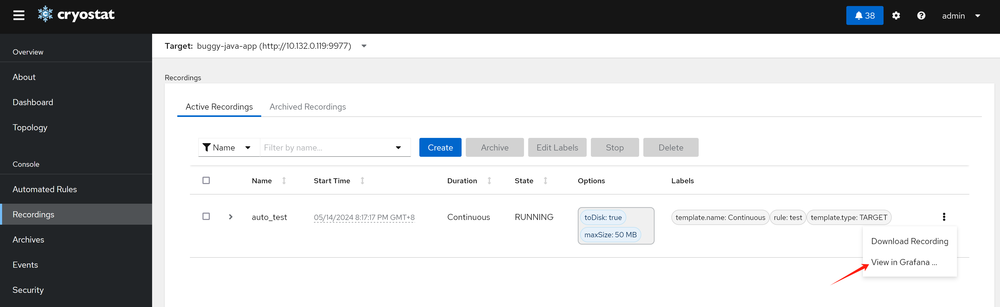
We can still find the thread num is increasing.
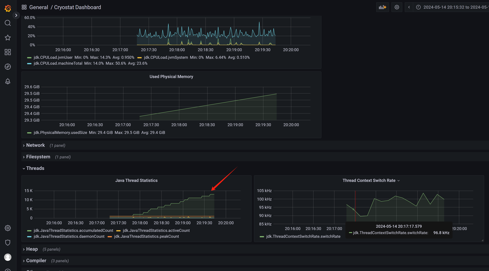
bug and limitation
- cryostat web console will dump on initial java app start.
- cryostat web console will crash sometimes if refresh the browser.
In general, the bugs is acceptable for cryostat is in TP right now.